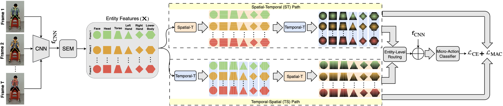
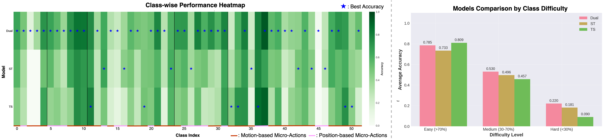
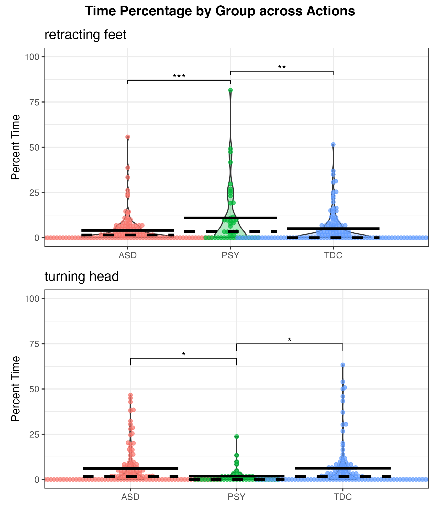

Motivation
Motion-Based vs. Position-Based Micro-Actions

Figure 1. Motion-based actions benefit from TS; position-based favor ST. Dual-path outperforms both.
Micro-actions like head scratches and finger taps need different processing depending on whether they're defined by spatial pose or temporal rhythm. Micro-DualNet processes body-part features through parallel Spatial→Temporal and Temporal→Spatial paths, with learned per-entity routing. State-of-the-art on iMiGUE (76.88%) and competitive on MA-52 (65.10%), with clinical validation on 290 individuals.
"Covering face" is defined by its final spatial configuration. "Leg shaking" is characterized by repetitive temporal rhythm. No single decomposition handles both.
Spatial arrangements first, then temporal evolution. Best for position-defined actions.
Motion patterns first, then spatial relationships. Best for rhythm-defined actions.
Each body part learns its own optimal ST/TS blend via lightweight gating.
Cross-path coherence via entity-aware contrastive learning.
Select an action, then switch views to see how prediction confidence changes. Watch how each body part gets routed differently.

| Method | Type | MA-52 Top-1 | MA-52 F1mean | iMiGUE Top-1 | iMiGUE Top-5 |
|---|---|---|---|---|---|
| TSM CNN | RGB | 56.75% | 61.39 | 61.10% | 91.24% |
| MANet CNN | RGB+Pose | 61.33% | 65.59 | 62.54% | 92.18% |
| SlowFast 3D | RGB | 59.60% | 63.09 | 58.73% | 89.41% |
| UniFormer Trans | RGB | 58.89% | 64.43 | 57.29% | 89.95% |
| CTR-GCN GCN | Skeleton | 52.61% | 56.48 | 52.94% | 89.76% |
| PoseConv3D GCN | Skeleton | 63.52% | 66.66 | 64.38% | 93.52% |
| PCAN CNN | RGB+Pose | 66.74% | 69.97 | – | – |
| Micro-DualNet (Ours) | RGB+Pose | 65.10% | 68.72 | 76.88% | 96.72% |


Applied to 290 individuals (ages 5–52) across ASD, PSY, and TDC groups, Micro-DualNet-detected micro-actions reveal statistically significant differences — elevated "retracting feet" in PSY (p < 0.001 vs ASD) and differential "leg shaking" in ASD (p = 0.002 vs PSY).

@inproceedings{chappa2026microdualnet,
title = {Micro-DualNet: Dual-Path Spatio-Temporal Network
for Micro-Action Recognition},
author = {Chappa, Naga VS Raviteja and Sariyanidi, Evangelos
and Yankowitz, Lisa and Nair, Gokul
and Zampella, Casey J. and Schultz, Robert T.
and Tun\c{c}, Birkan},
booktitle = {International Conference on Automatic Face and
Gesture Recognition (FG)},
year = {2026}
}Supported by OD, NICHD, and NIMH grants R01MH122599, R01MH118327, P50HD105354, R21HD102078; and the IDDRC at CHOP/Penn.